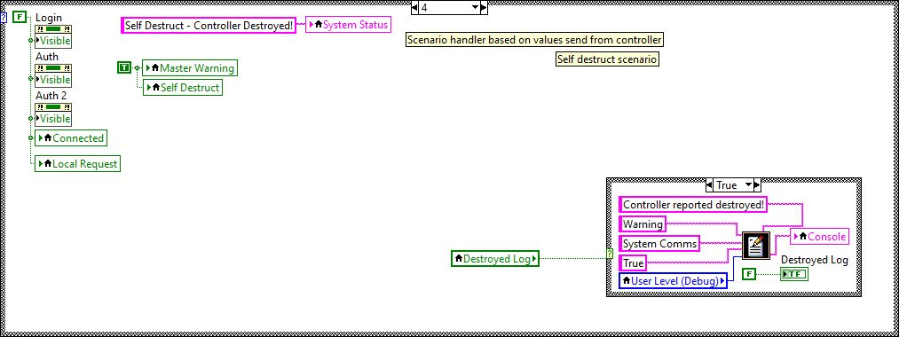
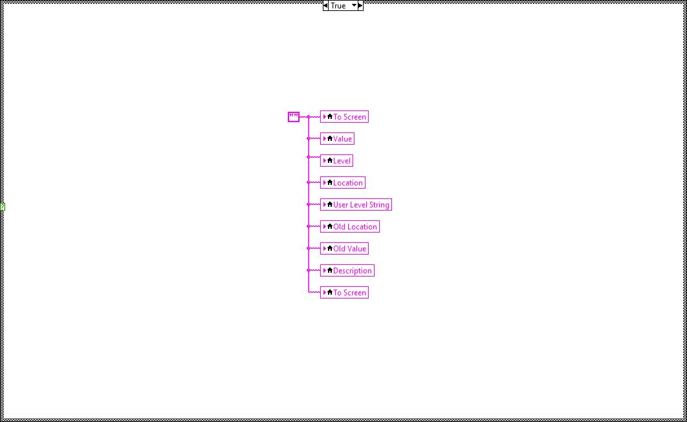

The PC-Based PC-Main programme is a TCP/IP capable controller design to connect to the MR-Main programme in order to pass and receive data to simulate customisable cooling and emergency events via control of the MyRIO attached hardware, such as a PWM servo.
It has limited functionality if not connected to thge MR-Main programme.

The myRIO MR-Main programme is a debug level operation that allows an authorised, TCP/IP capable controller to simulate customisable cooling events via control of a PWM servo and also transfer of information, including video, temperature and movement values.
If not connected to a remote controller, the programme will operate on a fix independent cooling cycle.




The subMoveDetect programme is a subVI which usues the myRIO onboard accelerometer to detect movement of the unit and allows control of the sensitivity limits to enable boolean flags to be set if the movement threshold exceeds these limits.